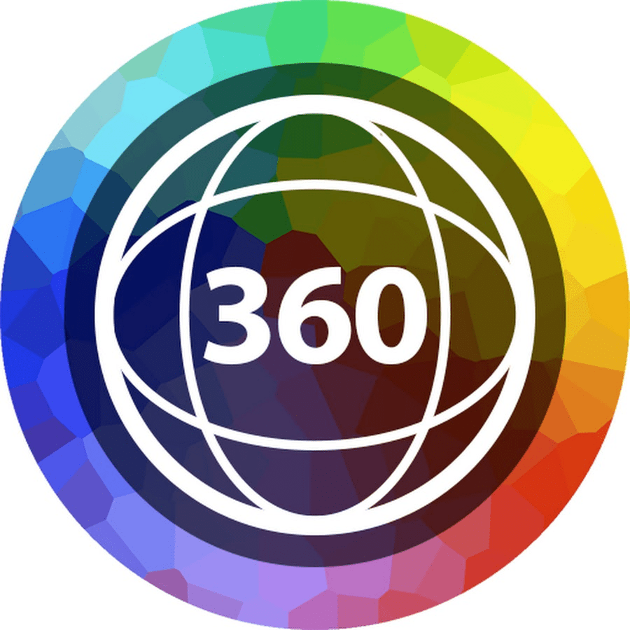

О нас:

Сайт создан Culture team's
В случае обнаружения ошибки сообщите нам:

Кострома — это популярный туристический городок, город Золотого кольца, основанный еще Юрием Долгоруким. Он славится историей, насчитывающей несколько веков, и характеризуется прекрасно сохранившемся историческим обликом. Это настоящая сокровищница культурных памятников. Родной город Ивана Сусанина и место проживания Снегурочки, Кострома наполнена сказочными и вполне реальными историями, происходившими в российском государстве. Архитектура города и волжские пейзажи делают Кострому местом для приятных неспешных прогулок.
В роли визитной карточки населенного пункта считается Сусанинская площадь. Ее планировка была утверждена самой императрицей. От нее расходятся улицы, словно лучики, в разные направления. Данное место имеет забавное название – «сковородка». Именно тут и установлен знаменитый памятник монумент Ивану Сусанину. Он прославился тем, что спас от гибели первого правителя династии Романовых от польских завоевателей.
Центральная площадь Костромы, расположенная на высоком берегу Волги, была сформирована в конце XVIII века. До этого на месте площади был ремесленный посад, постройки которого были уничтожены в пожаре. Площадь по форме напоминает веер — в 3 стороны от нее расходятся 9 улиц. По легенде, Екатерина Вторая, утверждая план застройки, обронила веер, что заставило архитектора изменить концепцию ансамбля. Северная часть площади полукруглая, а от южной части к Волге идет спуск, напоминающий ручку веера.
Самая большая усадьба в Костроме, дом Борщова — одна из наиболее примечательных построек в окрестностях Сусанинской площади. Особняк генерал-лейтенанта и сенатора Борщова изначально был деревянным. Современный облик в стиле русского классицизма здание приобрело уже после смерти владельца, когда наследники продали особняк купцу Первушину. После того, как городские власти отказались приобрести особняк под помещения для Присутственных палат, купец обустроил здесь гостиницу «Лондон».
Необыкновенно красивая каланча была возведена после того, как деревянная Кострома 14 раз горела в разрушительных пожарах. Пожарная каланча должна была не только контролировать очаги возгорания в городе, но и вписываться в архитектурный ансамбль Сусанинской площади. Дежурный пожарный, в случае пожара, бил в колокол и выпускал цветной шар: красный — если горел центр Костромы, синий — если было возгорание на окраинах. Сейчас внутри здания находится музей пожарного дела.
Вместе с пожарной каланчей и домом Борщова, гауптвахта создает архитектурный облик Сусанинской площади. Одноэтажное здание с колоннами было построено в 1820 году. Оно предназначалось для содержания арестованных военных. Здесь содержались декабристы и участники организации «Народная воля». В советское время в здании гауптвахты располагались литературный музей, детская библиотека, баня, банк. Сейчас внутри размещена выставка, знакомящая посетителей с военной историей города.
Кострома издавна была торговым городом. В конце XVIII века деревянные торговые ряды были уничтожены пожаром. Новые помещения для торговых лавок были выстроены из камня. Купеческие лавки, объединенные в галерею, были открыты в 1793 году. Все лавки имели типовой план: складской подвал, 1 этаж для торговли и 2 этаж для конторы. Красные ряды, расположенные с правой стороны площади, получили название за тип товаров. Красными товарами тогда именовали кожу, меха, ткани.
В архитектурный ансамбль Торговых рядов вписана церковь Спаса. Как и многие другие постройки Костромы, церковь изначально была деревянной. Каменный храм был возведен в 1766 году. Когда стали возводить Торговые ряды, церковь было принято сохранить — так и получился необычный ансамбль. В тот период к церкви достроили надвратную колокольню с панорамным видом на Волгу. В советский период колокольня была разобрана, но позднее ее восстановили.
Отдохнуть после прогулки по центру Костромы можно в Центральном парке. В парке возвышается памятник Ленину — ранее здесь должен был стоять монумент в честь 300-летия царского дома Романовых. Кстати, памятник Ленину стоит на постаменте, который был возведен для царской семьи. Парк делится на 2 зоны: для активного отдыха со спортивными площадками и для уединения на берегу Волги с лавочками и беседками.
«Дворянское собрание» — это один из самых знаменитых музеев нашей Родины, и Костромы в частности. Белокаменный особняк можно осмотреть как снаружи, так и изнутри.Местные экспозиции выполнены настолько искусно, что сразу видна любовь их создателей к исторической точности и их внимательность к самым мелким деталям. Внутри располагаются экспозиции, посвященные дворянскому быту. Выставки дополняются интерактивными приложениями, что позволяет полностью погрузиться в атмосферу прошлых веков.
Основанный в XV веке как мужской, позднее монастырь был преобразован в женский. Главной святыней монастыря считается Феодоровская икона Божией Матери — одна из святынь дома Романовых, икона признана чудотворной.Архитектурный ансамбль монастыря включает в себя: Богоявленский собор, построенный в 1559–1565 годах; Смоленскую часовню; башни монастырских стен; жилые корпуса.
Свято-Троицкий Ипатьевский мужской монастырь в Костроме, живописно расположившийся у места впадения реки Костромы в Волгу — памятник старины, объект культурного наследия нашего Отечества. Этот монастырь по праву называют «колыбелью», из которой вышла династия Романовых — именно в нем находился юный Михаил Романов, когда сюда направилась процессия Великого Посольства с вестью о том, что народ выбрал его в качестве нового царя.
У стен Ипатьевского монастыря находится музей «Костромская слобода». На мысу у слияния рек Кострома и Волга воссоздана русская деревня. Экспонаты музея — реальные деревянные постройки. В середине XX века, при создании водохранилищ на Волге, многие поселения подверглись затоплению, а архитектурные шедевры деревянного зодчества были безвозвратно утеряны. Часть из них удалось свезти в одно место — к Ипатьевскому монастырю. Так и был основан музей под открытым небом.
История Костромы неразрывно связана с семьей Романовых. Музей Романовых располагается в двухэтажном каменном особняке на улице Мира. Особняк был построен в XIX веке. На открытии присутствовал Николай II. Экспозиция посвящена династии Романовых. Посетители знакомятся с архивными документами и фотографиями. Также здесь можно познакомиться с экспозицией, посвященной костромскому боярству во времена Смуты и судьбе династии Годуновых.
Экспозиции музея льна и бересты знакомят посетителей с традиционными ремеслами. В первом зале гостям демонстрируют все этапы производства льняной одежды с помощью прялки и веретена. Мастерицы прядут и ткут при посетителях. В коллекции представлены традиционные русские наряды, в том числе и нарядные сарафаны. Во втором зале выставлены изделия из бересты — не только знаменитые лапти, но и домашняя утварь.
Костромской сыр давно стал узнаваемым брендом. Экскурсии по музею сыра проходят в интерактивном формате с рассказом о процессе сыроделия и демонстрацией приспособлений для изготовления сыра. Завершается экскурсия дегустацией лучших костромских сыров. Для детей проводятся квесты со сладким угощением в конце. При музее работает фирменный магазин с продукцией костромских сыроделов.
Кострому нередко называют ювелирной столицей России. В регионе производят треть всех серебряных и золотых украшений России. Массовое производство золота в Костромской области началось более 200 лет назад. В музее ювелирного искусства посетители узнают об истории этого дела в России с XVIII века и до наших дней. В экспозиции представлены изделия ручной работы прошлых веков и современные ювелирные шедевры. Особенно интересны экспонаты, выполненные в локальной технике «красносельская скань» с ажурными «морозными» узорами.
Кострома является официальной резиденцией внучки Деда Мороза. Терем Снегурочки — это интерактивный выставочный центр. Гостей встречает сама Снегурочка и угощает караваем. Далее следует осмотр терема и знакомство со сказочными персонажами. Экскурсия завершается в Ледяной комнате, которая облицована настоящим льдом и обставлена ледяными предметами быта. Напитки в комнате подаются в ледяных стаканах. На территории комплекса также можно приобрести авторские сувениры и отобедать в ресторане русской кухни.